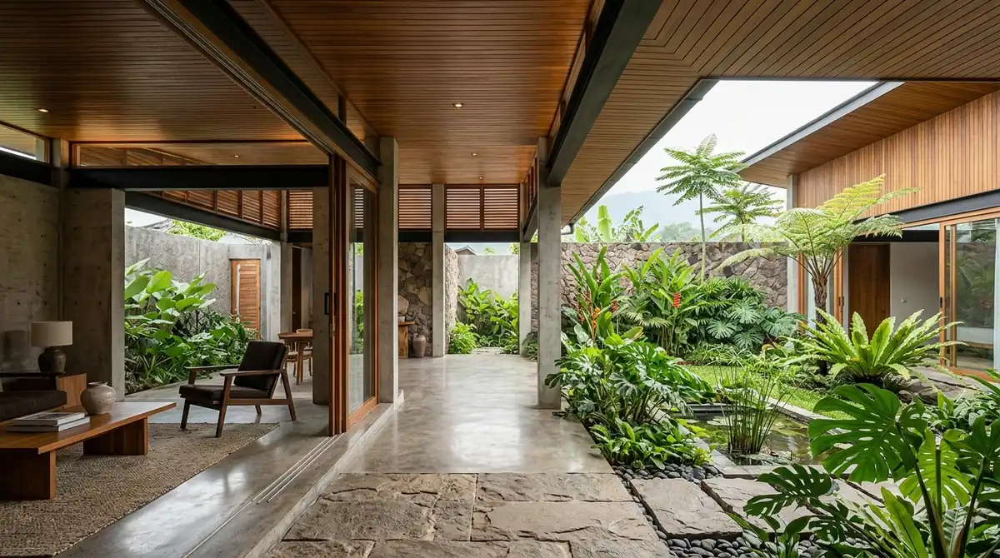

Ringkasan Inti
- Filosofi arsitektur di Malang menekankan respons terhadap iklim tropis sebagai dasar utama perencanaan desain.
- Ventilasi alami dan orientasi bangunan menjadi elemen kunci dalam penerapan filosofi ini.
- Material lokal yang tahan kelembapan mendukung penerapan filosofi arsitektur tropis secara konsisten.
- Filosofi ini memberikan manfaat kenyamanan termal sekaligus efisiensi biaya operasional bangunan jangka panjang.
Daftar Isi Artikel
Filosofi arsitektur Malang umumnya mengutamakan kenyamanan iklim tropis melalui ventilasi alami, orientasi bangunan tepat, dan material yang responsif terhadap cuaca setempat. Pendekatan ini bukan sekadar tren visual sesaat, melainkan komitmen desain berkelanjutan agar bangunan tetap sejuk, hemat energi, dan awet di dataran tinggi Jawa Timur.
Apa Itu Filosofi Arsitektur yang Mengutamakan Iklim Tropis?
Filosofi arsitektur yang mengutamakan iklim tropis adalah pendekatan desain yang menjadikan kondisi cuaca dan iklim setempat sebagai pertimbangan utama dalam setiap keputusan desain, mulai dari orientasi denah bangunan hingga pemilihan detail material eksterior dan interior.
Filosofi ini sangat relevan diterapkan di Malang karena kota ini memiliki iklim tropis dengan ketinggian antara 440 hingga 600 meter di atas permukaan laut. Meskipun suhu rata-rata terasa lebih sejuk dibanding kota pesisir seperti Surabaya, Malang tetap memiliki curah hujan tinggi, tingkat kelembapan udara yang dinamis, serta paparan radiasi matahari terik pada siang hari. Tanpa respons arsitektural yang tepat, ruangan di dalam rumah bisa mengalami jebakan panas termal atau justru lembap dan berjamur pada musim penghujan.

Penerapan Filosofi Arsitektur Tropis pada Bangunan di Malang
Penerapan filosofi arsitektur tropis pada bangunan di Malang dilakukan secara menyeluruh, mulai dari tahap awal perencanaan zoning tata ruang hingga pemilihan detail material akhir yang mendukung efisiensi termal.
Elemen penerapan utama yang konsisten diaplikasikan oleh arsitek profesional di Malang meliputi:
- Perencanaan Ventilasi Silang (Cross Ventilation): Menempatkan bukaan berhadapan atau kisi-kisi angin pada dinding yang berseberangan untuk mengalirkan angin pegunungan secara pasif tanpa harus bergantung penuh pada pendingin udara mekanis (AC).
- Atap dengan Teritisan (Overhang) Lebar: Penggunaan cucuran atap minimal 1,2 hingga 1,5 meter untuk mencegah tampias air hujan deras sekaligus menaungi bidang kaca dari paparan radiasi matahari langsung.
- Pemilihan Material Alami Tahan Kelembapan: Menggunakan batu alam andesit lokal, dinding bata ekspos dengan coating anti-jamur, serta kayu solid berkelas kuat (seperti jati atau ulin) yang terbukti tangguh terhadap iklim pegunungan.
- Integrasi Inner Courtyard dan Ruang Terbuka Hijau: Menghadirkan taman mini di tengah denah rumah untuk memperlancar sirkulasi udara vertikal serta menurunkan mikroklimat suhu sekitar hunian secara alami.
Catatan Arsitek Malang
Di wilayah Malang Raya seperti Lowokwaru, Dau, hingga Karangploso, perbedaan suhu siang dan malam hari bisa berkisar antara 6–8°C. Arsitek berlisensi akan merancang secondary skin berupa kisi kayu atau jalusi aluminium. Kisi-kisi ini memecah panas matahari terik di siang hari, namun tetap menjaga kehangatan interior saat angin dingin pegunungan bertiup di malam hari.
Manfaat Filosofi Tropis bagi Kenyamanan Penghuni Rumah
Filosofi arsitektur yang mengutamakan iklim tropis memberikan manfaat berlipat bagi penghuni rumah, baik dari sudut pandang kenyamanan psikologis, kesehatan fisik, maupun efisiensi anggaran jangka panjang.
Beberapa keunggulan utama yang dirasakan langsung oleh penghuni antara lain:
- Suhu Ruangan Stabil dan Nyaman: Udara di dalam rumah tetap terasa segar sepanjang hari berkat pertukaran udara alami yang lancar tanpa rasa sumpek atau pengap.
- Efisiensi Tagihan Listrik Bulanan: Kebutuhan menyalakan pendingin ruangan buatan (AC) dapat ditekan drastis, sehingga menghemat biaya operasional rumah tangga hingga 30–40%.
- Ketahanan Struktur Bangunan: Bangunan terhindar dari rembes dinding, lumut, dan cat mengelupas karena material dipilih secara presisi berdasarkan respon terhadap kelembapan Malang.
- Pencahayaan Alami Melimpah: Desain bukaan skylight dan void yang terukur menerangi setiap sudut rumah secara merata tanpa menimbulkan silau berlebih.
Perbedaan Pendekatan Tropis dengan Desain Tanpa Pertimbangan Iklim
Perbedaan mendasar antara bangunan yang menerapkan filosofi tropis dan desain yang sekadar menyalin tren visual luar negeri terletak pada adaptasi mikroklimat dan biaya pemeliharaan.
Bangunan tanpa perhitungan iklim cenderung menggunakan bidang kaca masif tanpa pelindung sun-shading, atap datar tanpa talang memadai, atau denah tertutup rapat. Akibatnya, penghuni menjadi sangat bergantung pada pendingin mekanis sepanjang waktu. Pada musim hujan, atap rawan bocor dan dinding lembap menjadi sumber masalah tahunan. Sebaliknya, bangunan berfilosofi tropis memanfaatkan sifat alamiah angin dan bayangan matahari, menciptakan rumah yang ramah lingkungan sekaligus berdaya tahan tinggi.
FAQ Seputar Filosofi Arsitektur Tropis Malang
Apakah filosofi arsitektur tropis hanya relevan untuk rumah tinggal?
Tidak. Filosofi ini sangat relevan diterapkan pada berbagai jenis bangunan, termasuk villa peristirahatan di Batu, bangunan komersial, kafe berkonsep open-space, hingga fasilitas kantor modern yang membutuhkan kenyamanan termal optimal bagi penggunanya.
Apakah bangunan dengan filosofi tropis lebih mahal dibanding bangunan konvensional?
Biaya pembangunan awal relatif serupa karena fokus utamanya adalah strategi penataan orientasi denah dan pemilihan jenis material yang cerdas. Dalam jangka panjang, konsep tropis justru jauh lebih hemat karena memangkas konsumsi listrik bulanan dan biaya renovasi akibat kerusakan cuaca.
Bagaimana cara memastikan arsitek menerapkan filosofi ini dengan tepat?
Pastikan Anda berkonsultasi dengan arsitek berlisensi IAI yang berpengalaman di kawasan Malang Raya. Tinjau portofolio proyek yang telah dibangun, dan pastikan gambar kerja mencakup simulasi ventilasi alami, analisis orientasi matahari, serta gambar detail potongan atap teritisan yang presisi.
Wujudkan Rumah Tropis Nyaman & Hemat Energi
Diskusikan kebutuhan tata ruang tropis, visualisasi 3D DED, dan efisiensi anggaran bersama tim arsitek berlisensi Arsitek Malang.

Naura Regyna Putri
Penulis & Tim Riset Arsitektur Maroon Arsitek Malang, spesialis perencanaan rumah tropis hemat energi, tata ruang pasif, dan legalitas PBG/SIMBG Malang Raya.